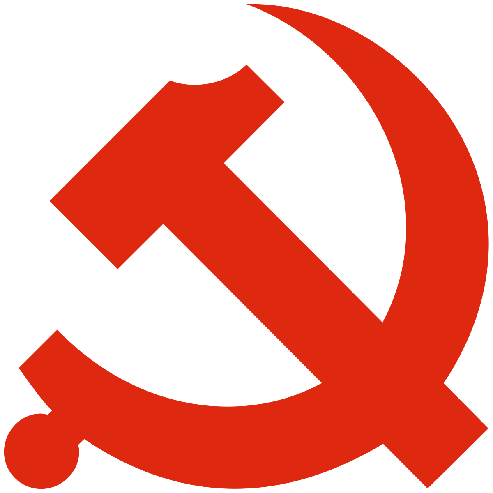

Comunismul
Comunismul este un termen care se poate referi la mai multe noțiuni legate între ele, dar diferite și, istoric, foarte contrastate, sau chiar, după comentatori precum istoricul Stephane Courtois, contradictorii:
o ideologie care, oficial, promovează un sistem social în care nu există stat, clase sociale și proprietate privată asupra mijloacelor de producție, și care are scopul de a realiza o societate egalitară;
o mișcare politică, un partid care afirmă că dorește să implementeze acest sistem;
un regim politic care se revendică „comunist”, „socialist”, „republică populară” sau „democrație populară”, în care statul există, fiind chiar atotputernic și totalitar sub conducerea excluzivă a unui singur partid, zis „comunist”, „socialist” sau „muncitoresc”, iar clasele sociale fiind diferențiate nu prin accesul la proprietate, ci prin accesul inegal la uzufructul proprietății colective.
